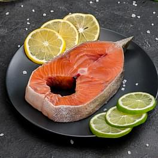
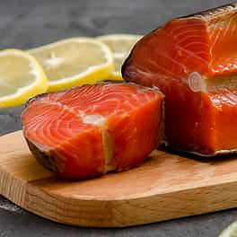
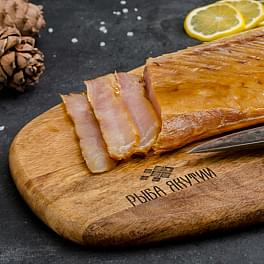
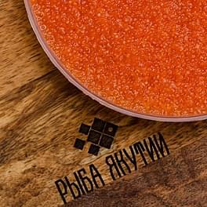

Друзья, здравствуйте!
О магазинеВ мае 2019 года мы открыли магазин «Рыба Якутии» в центре Рязани для того, чтобы познакомить жителей города с натуральными продуктами, которые изготовавливают из сырья, добываемого на Севере нашей необъятной страны. Это различные виды промысловой рыбы северных рек, продукты из оленины, дикого кабана, красная и чёрная икра, креветки, краб, а также разнообразные лакомства из северных ягод, орехов, много-много других вкусных и полезных продуктов — всего и не переслислить, лучше увидеть и попробовать.
Постепенно наш магазин полюбился рязанцам, а продукция завоевала сердца и вкусы наших друзей, да-да, потому что наши покупатели — наши настоящие друзья.
Мы активно начали продвижение магазина и приём заказов на доставку в Инстаграм. Ассортимент нашего магазина постоянно расширяется.
Мы решили, что вам будет удобнее познакомиться со всей нашей продукцией, сделать заказ и оформить доставку на сайте.
Мы собрали информацию, провели фотосессии, готовили сами и делились вашими рецептами, а теперь объединили всё это здесь.
Сгруппировали в удобный каталог продукцию, подготовили «вкусные» фотографии и захватывающие описания. И приглашаем вас всё это посмотреть и попробовать! Вы можете заказать деликатесы для себя или собрать подарочные наборы для своих близких. А также оформить доставку до двери. Оплата заказа производится при вручении удобным для вас способом.
Предлагаем попробовать
Рецепты
Сёмга х/к
255 ₽ / 100 гр- 
Чавыча с/м
210 ₽ / 100 гр - 
Нерка х/к
160 ₽ / 100 гр - 
Нельма х/к
158 ₽ / 100 гр Сосновый сироп
155 ₽ / 130 гр
Икра осетра
4900 ₽ / 100 гр
Пельмени с тунцом
73 ₽ / 100 гр- 
Икра хариуса
2000 ₽ / 250 гр Пелядь вяленая
140 ₽ / 100 грСало кабана
210 ₽ / 100 грХариус с/с
140 ₽ / 100 грМасло кедровое
550 ₽ / 100 мл